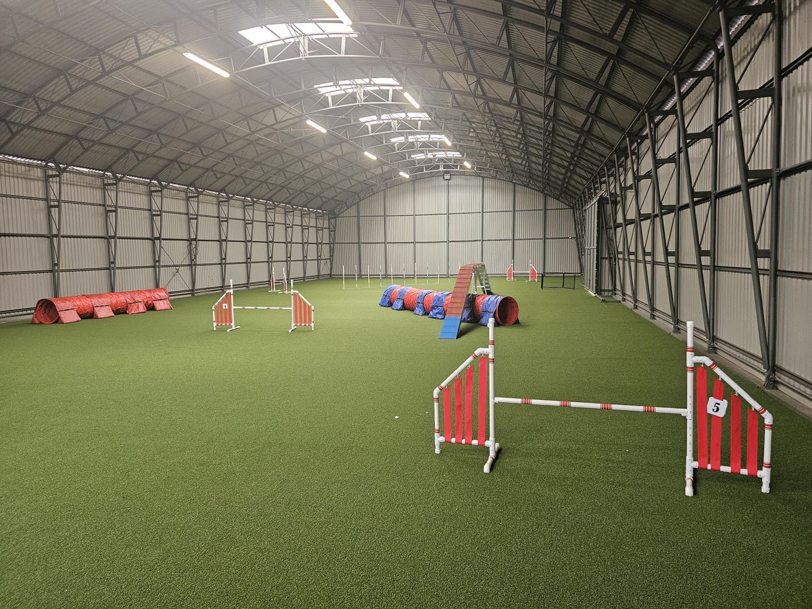
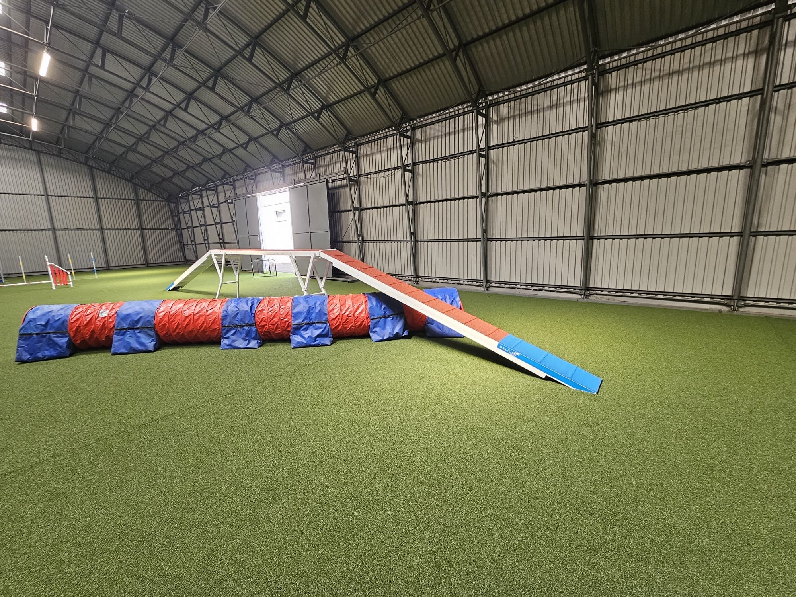
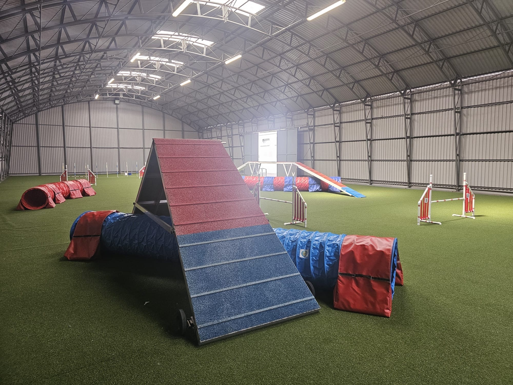
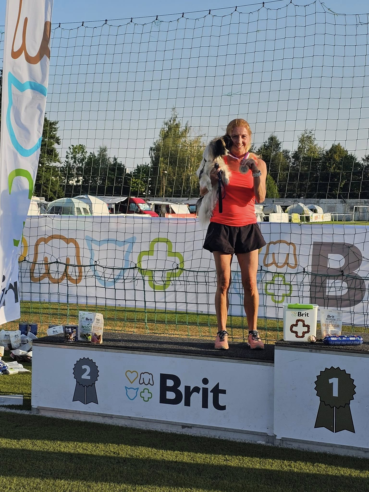
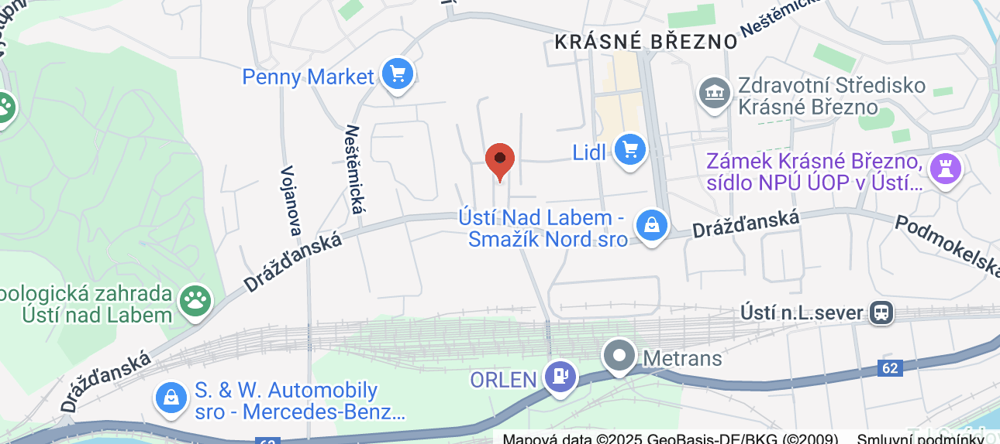
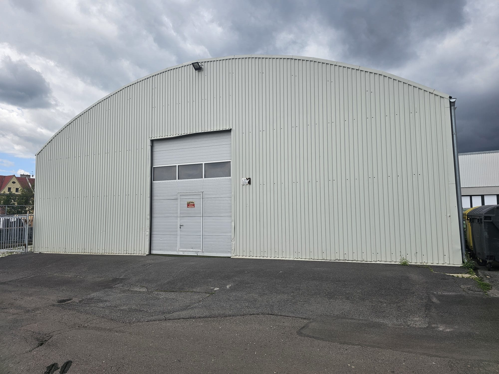

Povrch Juta Grass Play Comfort 24, kompletní sada překážek a zázemí pro tréninky, semináře i závody. 10 minut z dálnice D8 — na půl cesty mezi Prahou a Drážďany.
Rezervovat termín Ceník a bloky


Kompletní sada překážek španělské značky Galican: kladina (Soft Line), áčko, houpačka, tunely 3/4/5/6 m, 12× skoková, dálka, zeď, kruh, slalom. Kladina i áčko jsou na kolečkách — snadno si je při tréninku přemístíte sami (u kladiny se řiďte návodem v členské sekci).
Juta Grass Play Comfort 24 — bezpečný a rychlý povrch vyvinutý pro psí sporty, šetrný ke kloubům.
Parkování u haly, zázemí pro psovody, možnost celodenních akcí a seminářů. Provoz denně 6:00–20:00 (po dohodě i déle). Občerstvení, káva i voda jsou k dispozici v T-clubu (fitness centrum přímo v areálu) — na recepci, kde se vyzvedávají klíče.
Přehledný rezervační systém Dogres — vidíte volné hodiny a rezervujete na pár kliknutí, i z mobilu.

Agility aktivně závodím od roku 2018 se svými papilony a border kolií. Mezi mé úspěchy patří titul 1. vicemistr ČR v agility v družstvech (2025, 2026) a druhé a třetí místo z mistrovství Slovenska papillonů.
V hale vypisuji tréninky agility pro začátečníky a mírně pokročilé — najdete je přímo v rezervačním systému. A protože se profesně věnuji práci s myslí, patří k mým tréninkům i mentální příprava handlera: soustředění na startu a klidná souhra se psem.
| Pronájem haly | Cena |
|---|---|
| Hodinový pronájem (od 1. 10. 2026) | 450 Kč / h |
| AKCE do 30. 9.: nákup kreditů v rezervačním systému | 350 Kč / h |
| Celodenní pronájem (seminář, akce, závody) | 4 800 Kč |
| Letní cena (duben–září) | 350 Kč / h |
| Miete für deutsche Gäste | 22 € / Std. |
Ceny jsou konečné. Rezervace, platby a nákup kreditů přes systém Dogres. Halu provozuje Centrum systemiky a NLP s.r.o. · Dotazy: duricova@systemika-nlp.cz, +420 724 256 055.
Hostující trenéři z ČR i zahraničí. Chcete u nás uspořádat seminář? Celodenní pronájem za paušál — ozvěte se.
Připravujeme. Sledujte Facebook haly, ať vám neuteče přihlašování.
Workshopy s Jitkou: hlava rozhoduje závody. Termíny vypíšeme na podzim.


Hala stojí ve sportovním areálu — naše je tahle šedá (v areálu jsou haly dvě). Klíče se vyzvedávají na recepci T-clubu.